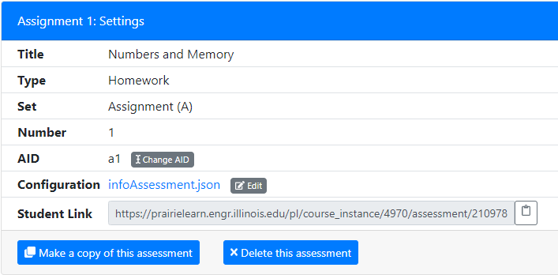

Jonatan Schroeder brings us another much-requested feature: direct student links to individual PrairieLearn assessments and course instances. These links are available for instructors on the "Settings" tab for a course instance or assessment:

The "Student Link" can be posted on external course web pages or learning management systems like Compass, Blackboard or Canvas. It can also be sent to students using email messages or discussion forums. By following the link, students can start working on the assessment immediately. If the student isn't enrolled in the PrairieLearn course already then they are auto-enrolled when they follow the link, assuming they have permission to enroll themselves.